 Teoria de la computacion
T e a m__P i d a ñ a s
DFA
NFA
REGEX
PDA
CFL
TM
Context Free Language
Guardar regla
Probar cadena
Manual de usuario
No digite espacios
Una vez que presione el boton guardar regla no podra agregar variables no terminales ni terminales
El simbolo ε se representa con la letra
e
El simbolo
e
no puede usarse como simbolo no terminal
Ejemplo como definir
(V) variables no terminales:
S,T
Las
(V) variables no terminales
solo pueden ser letras
El primer simbolo de las variables
no terminales(V)
se guarda como la
(S) variable inicial
Ejemplo como definir
(E) variables terminales:
0,1
Ejemplo 2 como definir
(E) variables terminales:
a,b
Ejemplo como definir
(R) reglas:
S>aSb
Ejemplo 2 como definir
(R)reglas:
S>Ta
Ejemplo 3 como definir
(R)reglas:
S>a
Ejemplo 4 como definir
(R)reglas:
S>e
 DFA
DFA